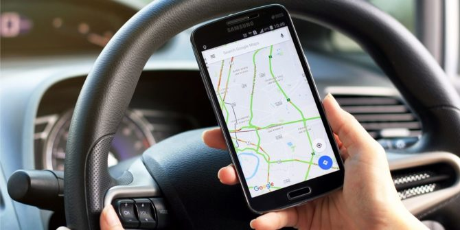

STOLEN VEHICLE TRACKING SOFTWARE

Several types of vehicle tracking devices exist. Typically they are classified as "passive" and "active". "Passive" devices store GPS location,
speed, heading and sometimes a trigger event such as key on/off, door open/closed. Once the vehicle returns to a predetermined point, the device is removed
and the data downloaded to a computer for evaluation. Passive systems include auto download type that transfer data via wireless download. "Active" devices
also collect the same information but usually transmit the data in near-real-time via cellular or satellite networks to a computer or data center for evaluation.
Many modern vehicle tracking devices combine both active and passive tracking abilities: when a cellular network is available and a tracking device is
connected it transmits data to a server; when a network is not available the device stores data in internal memory and will transmit stored data to the
server later when the network becomes available again.
Historically, vehicle tracking has been accomplished by installing a box into the vehicle, either self-powered with a battery or wired into the vehicle's
power system. For detailed vehicle locating and tracking this is still the predominant method; however, many companies are increasingly interested in the
emerging cell phone technologies that provide tracking of multiple entities, such as both a salesperson and their vehicle. These systems also offer tracking
of calls, texts, web use and generally provide a wider range of options.